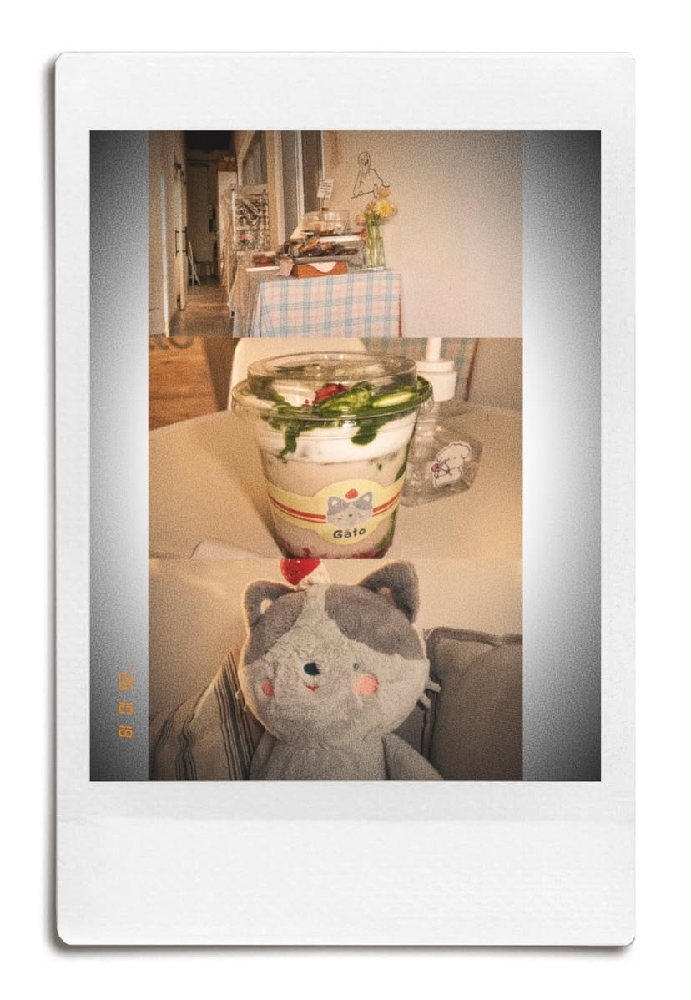
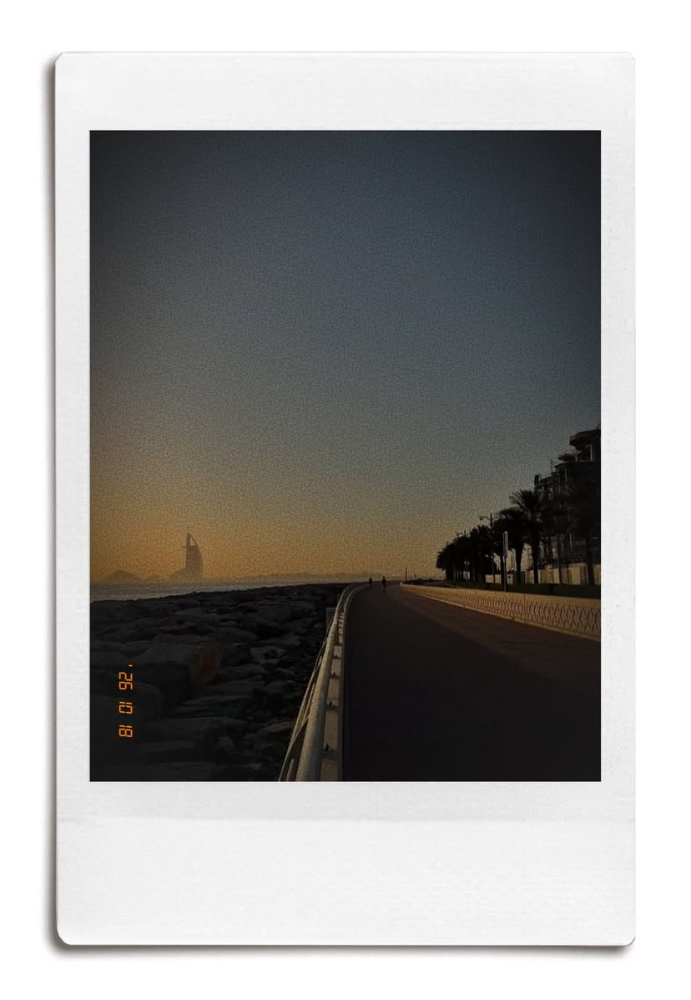
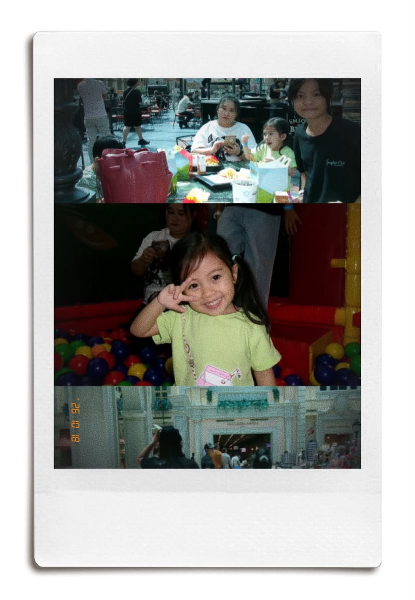

Finally Found My Matcha in Dubai at Gato Cafe
Date: October 18, 2026

I've been searching for a perfectly balanced matcha in Dubai for years, and I finally found it at Gato Cafe. From their cozy interior to their beautifully crafted drinks and delicious pastries, every detail felt intentional. This place didn't just serve great matcha, it created an experience that made me want to come back. If you're a matcha lover in Dubai, this one is definitely worth the visit.
Sunday Sunsets at Jumeirah Corniche
Date: October 10, 2026

I visit Jumeirah Corniche often, but Sundays there feel extra special. The golden sunset, the sound of the waves, and that gentle quiet before the new week. It's my favorite way to slow down and recharge. Not every single week, but whenever I can, this is where I go to find a little peace.
Weekend Fun with Family and Cousins
Date: October 11, 2026

There's nothing quite like heading out with the whole family and laughing around with my cousins. Whether we're just hanging out, exploring new places together, or being silly, those moments always feel special. They remind me that the best memories aren't about grand plans, they're simply about being together, enjoying each other's company, and having fun as a family.